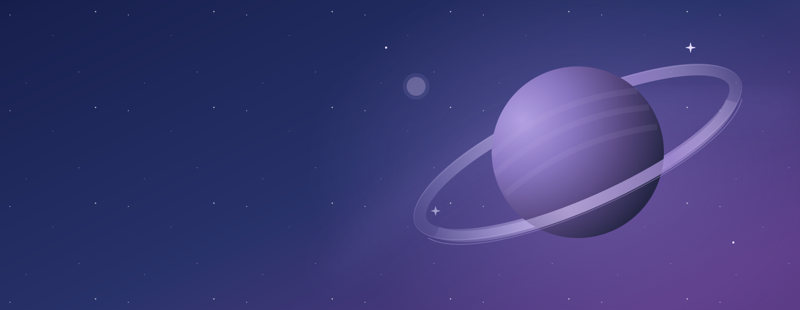

✦ UM POUCO DE CÉU NO SEU DIA
O universo tem
um jeito de guiar.
Entre estrelas e possibilidades,
um espaço para se conhecer melhor.
01 / 03
UM CONVITE AO AUTOCONHECIMENTOAstros, intuição e novas perspectivas ✦
DOZE SIGNOS. INFINITAS POSSIBILIDADES.
Qual é a sua energia?
Cada signo, um universo.
Encontre o seu e descubra mais.
PARA ENTENDER O SEU CÉU
Tudo começa com
os elementos.
Quatro formas de sentir o mundo.
Uma nova maneira de olhar para você.
Fogo
Áries · Leão · SagitárioIniciativa, entusiasmo e vontade de explorar. A energia que transforma uma ideia no primeiro passo.
Terra
Touro · Virgem · CapricórnioPresença, constância e conexão com o concreto. A energia de cultivar com cuidado o que importa.
Ar
Gêmeos · Libra · AquárioCuriosidade, ideias e troca. A energia que abre novas perspectivas e aproxima diferentes mundos.
Água
Câncer · Escorpião · PeixesSensibilidade, imaginação e intuição. A energia que encontra profundidade nas pequenas coisas.
NO NOSSO UNIVERSO
Uma pausa para descobrir.
CICLOS & RITUAIS
Cada fase, uma possibilidade
Na astrologia, as fases da Lua simbolizam começos, expansão e reflexão. Que tal reservar alguns minutos para escrever suas intenções e observar o que está mudando em você?
ALÉM DO SIGNO SOLAR
Você é um céu inteiro
O signo solar é só uma parte do mapa astral. Na interpretação astrológica, Lua e ascendente também ajudam a explorar emoções, percepções e diferentes formas de se expressar.